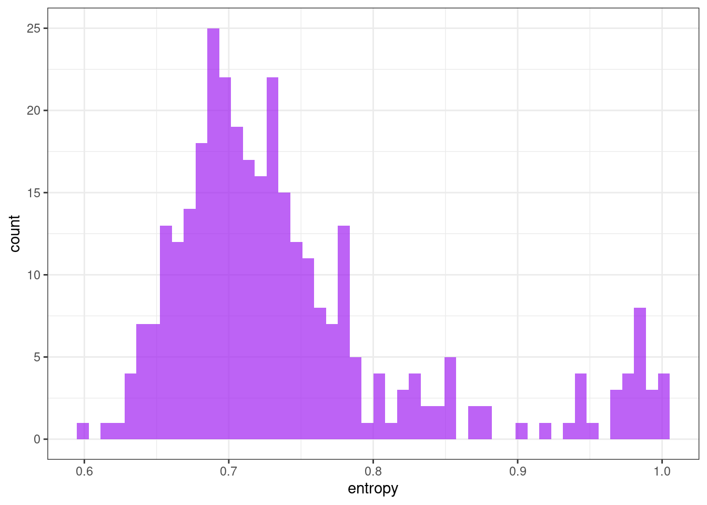

library(tidyverse)
library(arrow)
library(tsfeatures)Time series features
This notebook aims to explore time series features of dengue cases that may guide the clustering procedures. Time series features descriptions are quoted from Hyndman et al. (2022) .
Packages
Load data
Load the bundled data (326 municipalities, pop \(\geq\) 100k inhab.) with standardized cases and keep only the municipality code, date and cases variables.
tdengue <- read_parquet("../tdengue.parquet") %>%
select(mun, date, cases)Prepare data
Convert panel data to a list of ts objects.
tdengue_df <- tdengue %>%
arrange(mun, date) %>%
select(-date) %>%
nest(data = cases, .by = mun)
tdengue_list <- lapply(tdengue_df$data, ts)Time series features
tsf <- tsfeatures(
tslist = tdengue_list,
features = c("entropy", "stability", "lumpiness", "flat_spots")
)
tsf$mun <- tdengue_df$munEntropy
Measures the “forecastability” of a time series, where low values indicate a high signal-to-noise ratio, and large values occur when a series is difficult to forecast.
\[ -\int^\pi_{-\pi}\hat{f}(\lambda)\log\hat{f}(\lambda) d\lambda \]
ggplot(tsf, aes(x = entropy)) +
geom_histogram(bins = 50, alpha = .7, fill = "purple") +
theme_bw()
Stability & lumpiness
Stability and lumpiness are two time series features based on tiled (non-overlapping) windows. Means or variances are produced for all tiled windows. Then stability is the variance of the means, while lumpiness is the variance of the variances.
ggplot(tsf, aes(x = stability)) +
geom_histogram(bins = 50, alpha = .7, fill = "purple") +
theme_bw()
ggplot(tsf, aes(x = lumpiness)) +
geom_histogram(bins = 50, alpha = .7, fill = "purple") +
theme_bw()
Flat spots
Flat_spots are computed by dividing the sample space of a time series into ten equal-sized intervals, and computing the maximum run length within any single interval.
ggplot(tsf, aes(x = flat_spots)) +
geom_histogram(bins = 50, alpha = .7, fill = "purple") +
theme_bw()
References
Hyndman, Rob, Yanfei Kang, Pablo Montero-Manso, Thiyanga Talagala, Earo Wang, Yangzhuoran Yang, and Mitchell O’Hara-Wild. 2022. “Tsfeatures: Time Series Feature Extraction.” https://CRAN.R-project.org/package=tsfeatures.